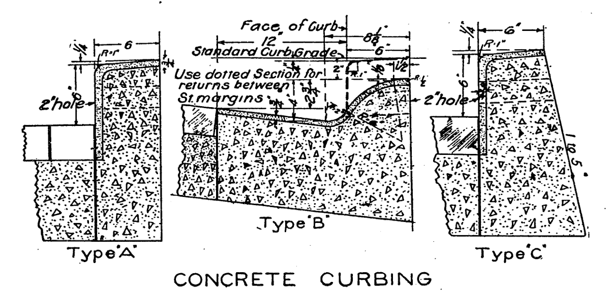
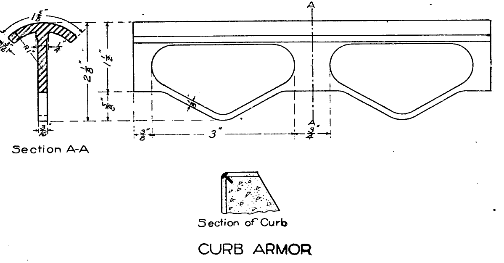

Wheelchair and scooter users
For anyone who can't lift their wheels over a curb, which is most people in power chairs and scooters, a missing ramp means the route ends there.
For most people, a curb is something you step over without noticing. For someone in a wheelchair, using a walker, or pushing a stroller, a curb with no ramp is a wall at the end of the sidewalk. Here's why, drawn to scale, and why Seattle's oldest corners are among the hardest to get past.
Seattle's standard curb is 6 inches tall. That's one easy step on foot. On wheels, it's a different story.
Without a ramp
With a ramp
The trouble is the small front wheels. Pushed straight into a step, a wheel can't roll up one that's taller than its own axle, no matter how hard you push. A 5 inch caster's axle is 2½ inches off the ground, so a 6 inch curb isn't hard for it, it's impossible. Some strong, practiced wheelchair users can tip back onto their big wheels and bump up a curb. Many can't, nobody using a power chair or scooter can, and nobody should have to.
Typical wheel sizes against the same 6 inch curb, all at the same scale. The dot is each wheel's axle. None comes close to the top of the curb.
Walk through almost any of Seattle's older neighborhoods and you'll find corners where a strip of steel caps the top edge of the curb, worn smooth on top and rusting down the face. The city called it "curb armor", and for a while it was the standard.
Seattle's 1919 Standard Plans and Specifications, the rulebook for every street the city built, include "Armored Concrete Curbing" (Section 163). It was built "in precisely the same manner" as an ordinary curb, with a steel bar set along the top edge while the concrete was still wet. Section 45 describes the bar itself: "curb armor of open anchorage type known as Kahn Curb Bar", galvanized steel, "accurately bent" to follow the curve at corners, and never in pieces shorter than three feet.


Armored curbs weren't a Seattle invention. Cities across the country armored their curbs in the same era, to keep iron-rimmed wagon wheels from chipping the edges. Seattle naturalist David B. Williams even suggests reading a neighborhood's age from its curbs: granite is oldest, concrete with a metal rim next, plain concrete newest.
The armor did its job: these corners have outlasted almost everything around them. That's the problem. They were built decades before anyone planned for a wheelchair on the sidewalk, and they don't wear out on their own. Adding a ramp means replacing the curb at that corner, steel and all, so these corners tend to wait until someone asks.
A ramp only helps if there's another one waiting across the street. A crossing with a ramp on one side and an old curb on the other is worse than useless: it leads you into the street and leaves you there.
Going the other way is worse: the trap is at the start, so you can't leave the corner at all. That's why Trebuche checks every corner crossing by crossing, and counts a corner with only one of its two ramps as unfinished.
Curb ramps were won by disabled people, and almost everyone ends up using them.
Around 1970, students with disabilities at UC Berkeley, Ed Roberts and the "Rolling Quads" among them, pushed the city of Berkeley to cut ramps into its curbs, some of the first anywhere. Parents, delivery workers and travelers took to them right away, which is why "the curb-cut effect" now names any change built for one group that turns out to help nearly everyone.
For anyone who can't lift their wheels over a curb, which is most people in power chairs and scooters, a missing ramp means the route ends there.
Including anyone getting older or recovering from an injury. A step down with nothing to hold onto is where falls happen.
A good ramp lines up with the crosswalk and has a yellow panel of raised domes that you can feel underfoot or with a cane, marking exactly where the sidewalk ends and the street begins.
Tipping a stroller back to get over every curb, with a child in it, at every corner, in the rain.
Delivery workers with hand trucks, neighbors with grocery carts, travelers with suitcases, kids on scooters and bikes.
A sprained ankle, a new baby, a knee replacement, or just getting older. Most people will need a ramp at some point.
The Americans with Disabilities Act (1990) requires curb ramps wherever a city builds or alters a sidewalk or street. In 2017, after disabled residents sued (Reynoldson v. City of Seattle), the city agreed to build or upgrade about 1,250 curb ramps a year for 18 years, roughly 22,500 in all, through 2035. Up to 150 a year can go to corners residents ask for.
That's a lot of ramps, but Seattle has a lot of corners, and the city doesn't always know where ramps are missing. Disability Rights Washington counted 1,424 ramps built because community members asked for them in the agreement's first nine years. Asking works.
The people who fought for curb ramps, and the historians who've written about them, tell this story better than we can.
Streetsblog's podcast with Scot Danforth (Chapman University), author of An Independent Man: Ed Roberts and the Fight for Disability Rights, on how Berkeley's curb cuts were won.
Listen →Episode 308, reported by Cynthia Gorney: Ed Roberts, the Rolling Quads, Berkeley's early curb cuts, and the road to the Americans with Disabilities Act.
Listen →A seven-minute clip on the curb-cut effect and the Berkeley students who organized for access to their city.
Watch →Bess Williamson (NYU Press). How ramps, curb cuts and accessible design came to be in the US, from World War II on.
Publisher →Aimi Hamraie (University of Minnesota Press). Its chapter "Sloped Technoscience" is about curb cuts and the disabled activists who made them.
Publisher →Angela Glover Blackwell in the Stanford Social Innovation Review, on why changes made for one group so often help everyone.
Read →